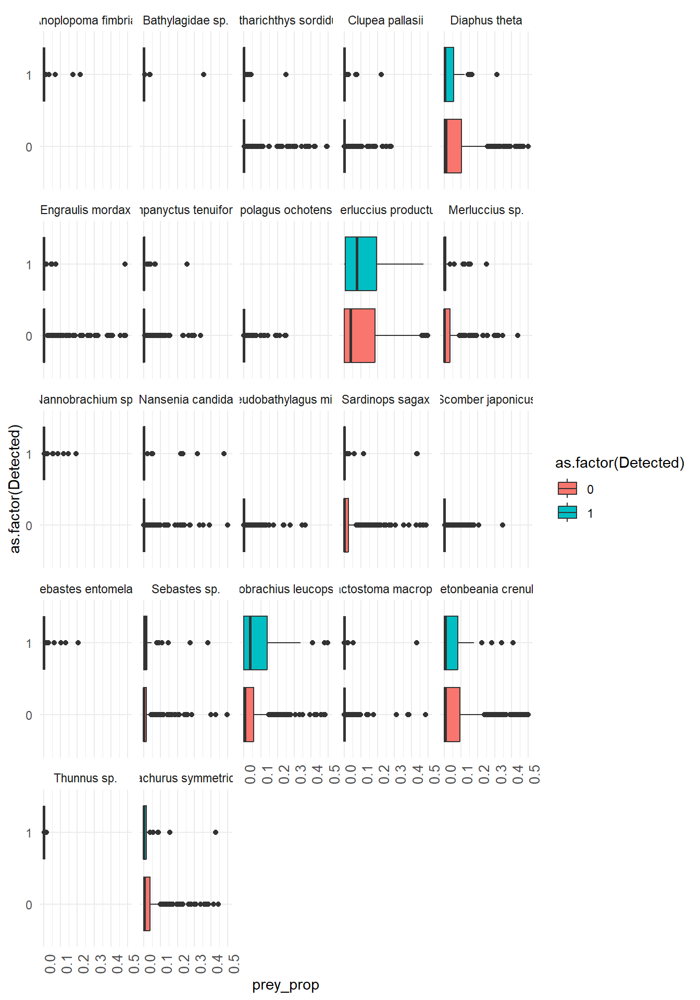
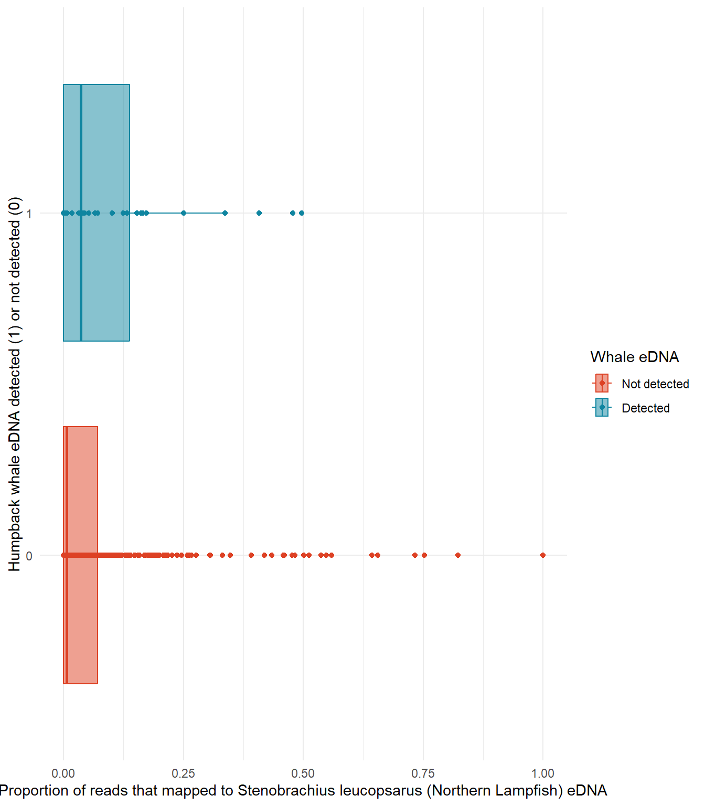
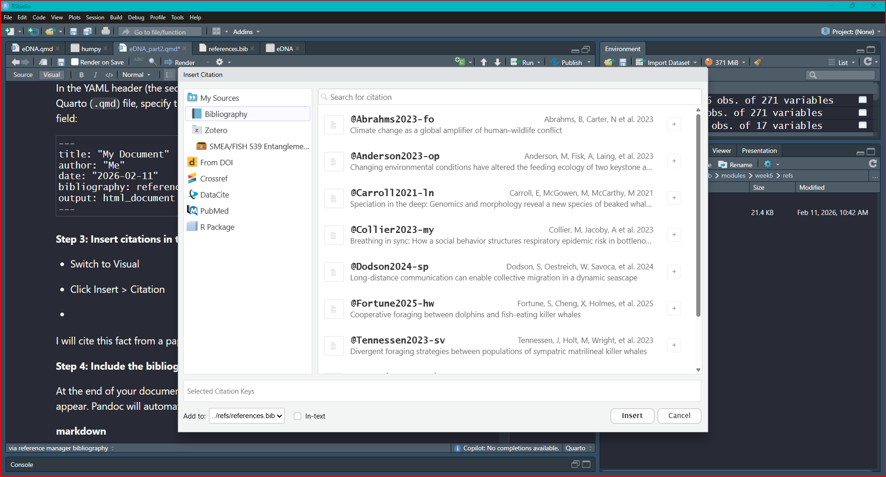

Code
knitr::opts_chunk$set(
echo = TRUE,
message = FALSE,
warning = FALSE
)Building on group eDNA projects
Amy Van Cise
Sarah Tanja
February 10, 2026
February 11, 2026
This week you will work in your groups to build on the eDNA data exploration we did in week 5 to generate specific hypotheses about eDNA distributions of marine mammals (and their prey). We will also practice hiding code chunks and integrating citations into our writing.
… IF your group didn’t explore this last week start here!
Here we can use group_by() combined with filter() for fish species that have an average proportion of reads greater than a specified percent when the marine mammal is detected or not detected.
filter(mean(prey_prop) > 0.02) means that we are only keeping fish species where the average proportion of reads that mapped to that fish species is greater than 2% when the marine mammal is detected or not detected.
Play around with the percent threshold to see how it changes the number of fish species that are included in the plot! Too high and you filter out meaningful data? Too low and you have too many fish species to visualize!
Here we use ggplot() with geom_boxplot() and facet_wrap() to create boxplots of prey species proportions when the predator is detected vs not detected. Work together within and across groups to try and recreate this plot!
x = prey_species and y = prey_prop from the wrangled and filtered data frame where pivot_longer() was used to make the new columns prey_species reflect the fish species and prey_prop reflect the proportion of DNA reads that mapped to that fish species.
ggplot(humpy, aes(x = as.factor(Detected), y = prey_prop)) +
geom_boxplot(aes(fill = as.factor(Detected))) +
theme(legend.position = "none") +
facet_wrap(~prey_species) +
scale_x_discrete() +
theme_minimal()+
theme(
axis.text.x = element_text(size = 10,
angle = 90,
hjust = 1)
) +
coord_flip() +
ylim(0,0.5)
Simple predator prey example:
Ho: There is no significant relationship between the presence of humpback whale eDNA and the presence of Stenobrachius leucopsarus (Northern Lampfish) eDNA in seawater samples.
Ha: Humpback whale eDNA is more likely to be detected when Stenobrachius leucopsarus (Northern Lampfish) eDNA is detected in larger relative abundance.
X: Presence of Stenobrachius leucopsarus (Northern Lampfish) eDNA in seawater samples (proportional, bound from 0 to 1)
Y: Presence of humpback whale eDNA in seawater samples (binary: detected vs not detected)
ggplot()scale_color_manual() controls the outline of your geom
scale_fill_manual() controls the fill of your geom
ggplot(humpy %>% filter(prey_species == "Stenobrachius leucopsarus"),
aes(x = prey_prop, y = as.factor(Detected), fill = as.factor(Detected), color = as.factor(Detected))) +
geom_point() +
geom_boxplot(alpha = 0.5) +
#coord_flip() +
scale_color_manual(
values = mycolors,
name = "Whale eDNA",
labels = c("Not detected", "Detected")
) +
scale_fill_manual(
values = mycolors,
name = "Whale eDNA",
labels = c("Not detected", "Detected")
) +
theme_minimal() +
labs(x = "Proportion of reads that mapped to Stenobrachius leucopsarus (Northern Lampfish) eDNA",
y = "Humpback whale eDNA detected (1) or not detected (0)")
You can manage citations in R Markdown using a bibliography file (e.g., .bib). If you have not had exposure to citation managers I highly recommend them, they’re worth the setup time!
Some free options are:
These tools allow you to collect and organize your references, and then export them in a .bib file format that can be used in R Markdown.
Step 1: Create a .bib file
A .bib file is a plain text file that stores reference details in BibTeX format.
Step 2: Link the .bib file in your R Markdown document
In the YAML header (the section between the --- lines) of your R Markdown (.Rmd) or Quarto (.qmd) file, specify the path to your bibliography file using the bibliography field:
---
title: "My Document"
author: "Me"
date: "2026-02-11"
bibliography: references.bib
output: html_document
---Step 3: Insert citations in the text
Switch to Visual
Click Insert > Citation

Select Bibliography
Click the + sign to add the citation where your cursor sits in your .Rmd file
I will cite this fact from a paper (Abrahms et al. 2023)
Step 4: Include the bibliography section
At the end of your document, add a section header where the bibliography should appear. Pandoc will automatically generate the reference list:
Paste this code chunk into your .Rmd file! The global setup code chunk controls the default settings for all code chunks in your report. TRUE = show it, FALSE = hide it. In the above example global setup chunk, we have set:
echo = TRUE to show the code in the report
message = FALSE to hide any messages
warning = FALSE to hide warnings that may be generated by the code
You can adjust these settings individually on a chunk by chunk basis by typing inside the {r} at the beginning of each code chunk. For example, if you want to hide the code and its output for a specific chunk, you can set {r,include = FALSE} for that chunk.
Checkout html or PDF format options here
Background information on chosen predator (e.g. diet, distribution, habitat use, competitors, predators)
Citations
Finalized Broad Research Question
Finalized Specific Research Question (if needed)
Finalized Falsifiable Null and Alternate Hypotheses (be specific)
Defined X and Y variables
Preliminary figure(s) showing X and Y variables.
---
title: "1. Specific Hypotheses and figure generation using eDNA data"
subtitle: "Building on group eDNA projects"
page-layout: article
author:
- Amy Van Cise
- Sarah Tanja
date: "2026-02-10"
draft: false
date-modified: today
order: 1
format:
html:
toc: true
toc-depth: 2
number-sections: false
code-fold: true
citation-location: document
citation-hover: true
bibliography: "../refs/references.bib"
editor:
markdown:
wrap: 72
---
```{r setup}
knitr::opts_chunk$set(
echo = TRUE,
message = FALSE,
warning = FALSE
)
```
# Background
This week you will work in your groups to build on the eDNA data
exploration we did in week 5 to generate specific hypotheses about eDNA
distributions of marine mammals (and their prey). We will also practice
hiding code chunks and integrating citations into our writing.
::: callout-important
- eDNA data for fish prey species is proportional to the number of DNA
reads that mapped to that fish species in the SEAWATER SAMPLE, which
is not a direct measure of abundance but can be used as a proxy for
relative abundance. IT IS NOT DIET COMPOSITION!
:::
```{r, include=FALSE}
library(tidyverse)
#installing marmap can take 30-60 seconds
#make sure R is up to date (v 4.0.x) with "version" in console
library(raster) # for working with spatial data, dependency for marmap
library(marmap) # for bathymetry data
library(PNWColors)
library(colorspace)
```
```{r, include=FALSE}
eDNA <- read_csv("../../week5/data/eDNA_MM_fish_detections_clean.csv")
```
```{r, include=FALSE}
eDNA_positive <- eDNA %>%
filter(Detected == 1)
```
```{r, include=FALSE}
lon1 <- max(eDNA$lon) + 2
lon2 <- min(eDNA$lon) - 1
lat1 <- min(eDNA$lat) - 2
lat2 <- max(eDNA$lat) + 2
```
```{r, include=FALSE}
bathy_map <- getNOAA.bathy(lon1=lon1, lon2=lon2, lat1=lat1, lat2=lat2,
resolution=1, keep=TRUE)
```
```{r, include=FALSE}
#create a ggplot object appropriate to the bathy data object
base_map <- autoplot.bathy(bathy_map, geom=c('raster'),
show.legend=FALSE) + #turn off legend
scale_fill_etopo() #special topographic colors
```
# Predator prey eDNA presence relationships
... IF your group didn't explore this last week start here!
::: callout-important
Here we can use `group_by()` combined with `filter()` for fish species
that have an average proportion of reads greater than **a specified
percent** when the marine mammal is detected or not detected.
`filter(mean(prey_prop) > 0.02)` means that we are only keeping fish
species where the average proportion of reads that mapped to that fish
species is greater than 2% when the marine mammal is detected or not
detected.
Play around with the percent threshold to see how it changes the number
of fish species that are included in the plot! Too high and you filter
out meaningful data? Too low and you have too many fish species to
visualize!
:::
```{r}
humpy <- eDNA %>%
filter(common_name == "humpback whale") %>%
pivot_longer(16:length(.), names_to = "prey_species", values_to = "prey_prop") %>%
group_by(Detected, prey_species) %>%
filter(mean(prey_prop) > 0.02) %>% #
ungroup()
```
## Plot prey species proportions vs predator presence
Here we use `ggplot()` with `geom_boxplot()` and `facet_wrap()` to
create boxplots of prey species proportions when the predator is
detected vs not detected. Work together within and across groups to try
and recreate this plot!
::: callout-tip
`x = prey_species` and `y = prey_prop` from the wrangled and filtered
data frame where `pivot_longer()` was used to make the new columns
`prey_species` reflect the fish species and `prey_prop` reflect the
proportion of DNA reads that mapped to that fish species.
:::
```{r fig.height=10}
ggplot(humpy, aes(x = as.factor(Detected), y = prey_prop)) +
geom_boxplot(aes(fill = as.factor(Detected))) +
theme(legend.position = "none") +
facet_wrap(~prey_species) +
scale_x_discrete() +
theme_minimal()+
theme(
axis.text.x = element_text(size = 10,
angle = 90,
hjust = 1)
) +
coord_flip() +
ylim(0,0.5)
```
## Plot predator and prey species spatial distribution
```{r, fig.height=12}
base_map +
geom_point(data = humpy,
aes(x=lon, y = lat, size = prey_prop,
color = prey_species),
alpha = 0.6)+
geom_point(data = humpy %>% filter(Detected == 1),
aes(x=lon, y = lat),
alpha = 0.5,
color = "black",
shape = 17)
```
# Specific Hypotheses with X and Y variables
Simple predator prey example:
**H~o~**: There is no significant relationship between the presence of
humpback whale eDNA and the presence of *Stenobrachius leucopsarus*
(Northern Lampfish) eDNA in seawater samples.
**H~a~**: Humpback whale eDNA is more likely to be detected when
[*Stenobrachius leucopsarus* (Northern
Lampfish)](https://www.fishbase.se/summary/Stenobrachius-leucopsarus)
eDNA is detected in larger relative abundance.
***X***: Presence of *Stenobrachius leucopsarus* (Northern Lampfish)
eDNA in seawater samples (proportional, bound from 0 to 1)
***Y***: Presence of humpback whale eDNA in seawater samples (binary:
detected vs not detected)
# Example figure for this hypothesis:
##### An aside on color palettes...
[Colorspace](https://colorspace.r-forge.r-project.org/)
```{r}
library(colorspace)
#colorspace::hcl_wizard()
```
```{r}
#colorspace::choose_palette()
```
[PNWColors](https://github.com/jakelawlor/PNWColors)
```{r}
library(PNWColors)
mycolors <- rev(pnw_palette("Bay", 2, type = "discrete"))
```
## `ggplot()`
- `scale_color_manual()` controls the outline of your geom
- `scale_fill_manual()` controls the fill of your geom
```{r, fig.height=8}
ggplot(humpy %>% filter(prey_species == "Stenobrachius leucopsarus"),
aes(x = prey_prop, y = as.factor(Detected), fill = as.factor(Detected), color = as.factor(Detected))) +
geom_point() +
geom_boxplot(alpha = 0.5) +
#coord_flip() +
scale_color_manual(
values = mycolors,
name = "Whale eDNA",
labels = c("Not detected", "Detected")
) +
scale_fill_manual(
values = mycolors,
name = "Whale eDNA",
labels = c("Not detected", "Detected")
) +
theme_minimal() +
labs(x = "Proportion of reads that mapped to Stenobrachius leucopsarus (Northern Lampfish) eDNA",
y = "Humpback whale eDNA detected (1) or not detected (0)")
```
# Citation tips and tricks
You can manage citations in R Markdown using a bibliography file (e.g.,
.bib). If you have not had exposure to citation managers I *highly*
recommend them, they're worth the setup time!
Some free options are:
- [Zotero](https://www.zotero.org/)
- [Paperpile](https://paperpile.com/)
These tools allow you to collect and organize your references, and then
export them in a `.bib` file format that can be used in R Markdown.
**Step 1: Create a `.bib` file**
A `.bib` file is a plain text file that stores reference details in
BibTeX format.
**Step 2: Link the `.bib` file in your R Markdown document**
In the YAML header (the section between the `---` lines) of your R
Markdown (`.Rmd`) or Quarto (`.qmd`) file, specify the path to your
bibliography file using the `bibliography` field:
``` markdown
---
title: "My Document"
author: "Me"
date: "2026-02-11"
bibliography: references.bib
output: html_document
---
```
**Step 3: Insert citations in the text**
- Switch to Visual
- Click Insert \> Citation

- Select Bibliography
- Click the `+` sign to add the citation where your cursor sits in
your `.Rmd` file
I will cite this fact from a paper [@Abrahms2023-fo]
**Step 4: Include the bibliography section**
At the end of your document, add a section header where the bibliography
should appear. Pandoc will automatically generate the reference list:
::: callout-tip
## Learn more about citations in Visual R Markdown from [this guide page](https://rstudio.github.io/visual-markdown-editing/citations.html)
:::
# Report formatting tips and tricks
## The global setup chunk!
``` markdown
{r setup}
knitr::opts_chunk$set(
echo = TRUE,
message = FALSE,
warning = FALSE
)
```
Paste this code chunk into your .Rmd file! The global setup code chunk
controls the default settings for **all code chunks in your report**.
`TRUE` = *show it*, `FALSE` = *hide it*. In the above example global
setup chunk, we have set:
- `echo = TRUE` to show the code in the report
- `message = FALSE` to hide any messages
- `warning = FALSE` to hide warnings that may be generated by the code
You can adjust these settings individually on a chunk by chunk basis by
typing inside the {r} at the beginning of each code chunk. For example,
if you want to hide the code and its output for a specific chunk, you
can set {r,`include = FALSE`} for that chunk.
## yaml front matter
Checkout html or PDF format options
[here](https://quarto.org/docs/reference/formats/html.html)
# Week 6 Lab Report should include:
1. Background information on chosen predator (e.g. diet, distribution,
habitat use, competitors, predators)
2. Citations
3. Finalized Broad Research Question
4. Finalized Specific Research Question (if needed)
5. Finalized Falsifiable Null and Alternate Hypotheses (be specific)
6. Defined X and Y variables
7. Preliminary figure(s) showing X and Y variables.
# References